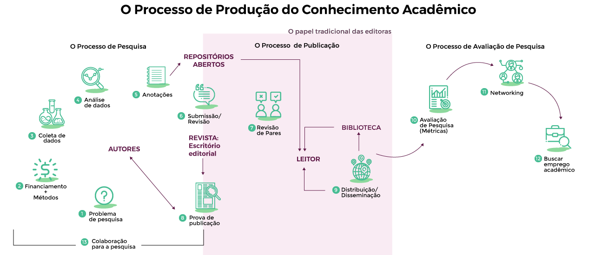
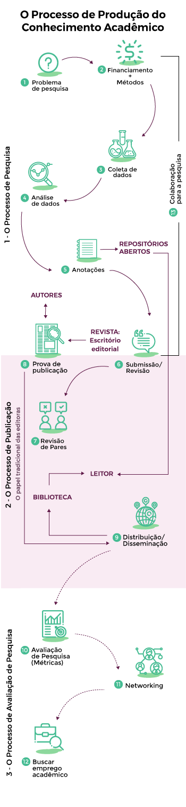
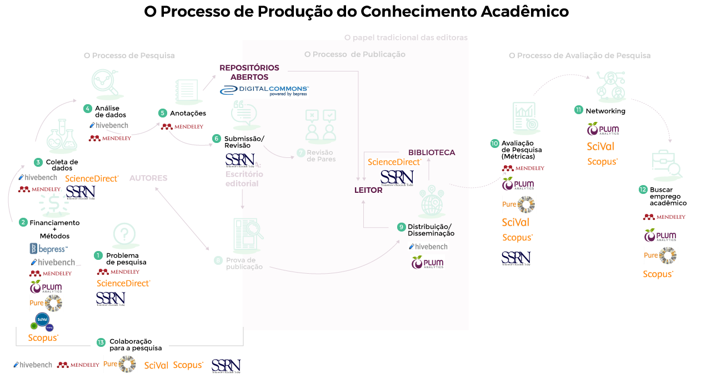
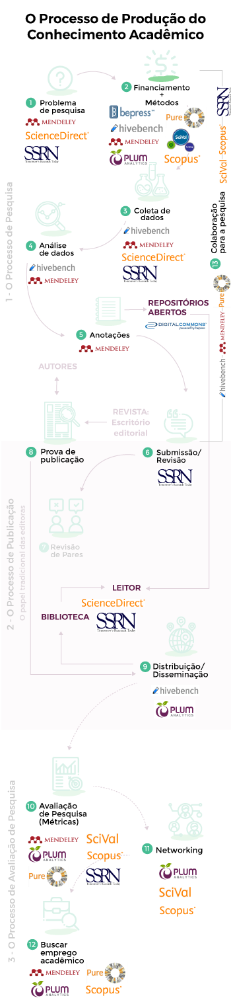

Aula 6
Visões críticas da Ciência Aberta
No artigo “O Futuro da Ciência Aberta”, o historiador e filósofo da economia Philip Mirowski (2018) faz críticas contumazes à proposta da Ciência Aberta, reconhecendo que ela não é um porvir, mas representa mudanças já em curso. O autor analisa os quatro principais argumentos contra o “antigo regime da ciência” e conclui que a Ciência Aberta, tal qual vem sendo implementada, não consertará aquilo que se julga problemático.
Segundo o autor, além da iminente frustração de expectativas, o que está em jogo é a quebra do monopólio histórico da produção de conhecimento a partir de um estranho discurso “sem cheiro de mercado”. Nesse sentido, Mirowski descreve a Ciência Aberta como a associação de um ethos de uma "ciência radicalmente colaborativa" às estruturas emergentes do "capitalismo de plataforma". Em suas palavras, "o movimento da Ciência Aberta é um artefato do atual regime neoliberal da ciência, que reconfigura ambas instituições e a natureza do conhecimento para melhor se adequar aos imperativos do mercado”. (2018, pg 172)
Saiba mais:
Problemas que a Ciência Aberta resolveria
Sobre os quatro problemas que a Ciência Aberta resolveria, Mirowski (2018) contra-argumenta:
-
Aumento da desconfiança da população em relação à ciência
Considera inadequada a estratégia de aproximar as pessoas do fazer científico para combater a resistência e o ceticismo crescentes em relação à ciência porque, segundo pesquisas de Gauchat (2015), a hostilidade atual se concentra em dois públicos específicos e seus questionamentos sobre a relação Ciência e Estado: 1) Conservadores, neoliberais, com alta escolaridade que consideram que os cientistas precisam se adequar a disciplina de mercado. 2) Grupos religiosos que rejeitam a autoridade da ciência, considerando sua contribuição irrelevante para o debate e resolução de controvérsias públicas.
-
O déficit democrático da ciência
Afirma que o atual impulso para democratizar a ciência adota uma conotação diferente de ampliar o “mercado de ideias”. Ela se limitaria a oferecer uma participação roteirizada, pré-definida, de um público considerado “não credenciado” em determinadas etapas do processo de pesquisa. O autor aponta que o caráter democrático da Ciência Aberta não significa qualquer contribuição política dos cidadãos na agenda ou governança da própria ciência.
-
Desaceleração da produtividade científica
Argumenta que os indicadores não apontam uma desaceleração da produção de conhecimento científico, mas que a “baixa produtividade” citada pelos “evangelistas” da Ciência Aberta se refere, de maneira precisa e localizada, ao setor farmacêutico e a produção de novas drogas. Para o autor, a citação constante da área biomédica, de testes clínicos e da descoberta de novas drogas indica, de modo inequívoco, o cerne do real interesse. Haveria um flerte constante entre ciência aberta e a big pharma com apoio discursivo de jornais científicos consagrados (Nature, Science, Cell), imprensa (The Economist) e estudos duvidosos, patrocinados por empresas farmacêuticas que comprovariam a impossibilidade de replicar pesquisas através do sistema atual (Bayer, 2011). O autor enfatiza que a propriedade intelectual restritiva é o alicerce da indústria farmacêutica. Por isso, tal flerte origina o modelo híbrido da “inovação aberta protegida” (protected open innovation), que combina controle corporativo com o que considera um módico outsourcing e crowdsourcing (MIROWSKY, 2018, p. 181). A adoção da perspectiva aberta pelas farmacêuticas seria apenas uma estratégia para reduzir custos, pois a única "abertura" possível no formato atual não se distinguiria de um recrutamento de mão-de-obra subempregada já que os cientistas praticamente não teriam controle do processo de pesquisa e receberiam poucas recompensas ou remuneração. Ele afirma que os dez anos de experiência da NIH com o modelo de inovação aberta protegida mostram que ele é pouco promissor.
-
Explosão de retratações e falsificações
Identifica que o número crescente de fraudes (plágio, fabricação de dados, manipulação de imagens etc) e o questionamento público da legitimidade da ciência forçaram, nos anos 1990, alguns editores de revistas científicas a promover a retratação como instrumento para repudiar publicamente artigos que anteriormente foram considerados adequados e, portanto, publicados. No entanto, considera que as retratações são discretamente publicadas pois, indiretamente admitem falhas graves no processo de revisão por pares e fragilizam a reputação das revistas. Segundo Mirowski, as retratações não eliminam a “ciência ruim”, pois o cerne da crise de reprodutibilidade estaria no modus operandi das revistas, pois elas privilegiam a publicação de resultados positivos por conta de uma noção de “adição de conhecimento" em detrimento dos resultados negativos, muito mais comuns em ciência. O autor caracteriza como “panacéia da ciência aberta” adotar a ideia de transparência, no estilo de rede social da internet, como solução para a dita crise, evitando fazer as críticas necessárias sobre uma lógica de publicação de resultados positivos que, segundo Fanelli, torna a ciência menos pioneira e menos objetiva. A fuga dessa responsabilidade é exemplificada por Mirowski na estratégia da Nature em questionar os limites dos métodos de pesquisa e não a responsabilidade dos periódicos. Para o autor, a proposta da Ciência Aberta seria reformar um sistema para gerar um novo modelo de negócio que não cobre apenas a publicação, mas também o processo de revisão.
O avanço do capitalismo de plataforma sobre a produção do conhecimento
Refutados os principais argumentos favoráveis à Ciência Aberta, Mirowisky (2018) faz perguntas incômodas para questionar os interesses subjacentes às propostas, como:
Quem precisamente pretende arrombar (crack) a ciência para abrí-la?
Mirowisky (2018)
De onde vem o financiamento para tornar uma opinião vaga e mal especificada em um movimento?
Mirowisky (2018)
Para o autor, a Ciência Aberta, tal qual vem sendo conduzida, representa o avanço neoliberal sobre o campo da produção do conhecimento científico. Este diagnóstico é corroborado pelas pesquisas de Pozada e Chen (2018) sobre as recentes aquisições de três das cinco principais editoras acadêmicas do mundo (Elsevier; Wiley; Taylor and Francis), cujos resultados apontam que elas expandiram seu campo de atuação se reposicionando como “provedores de soluções” ou “analistas de informação” de modo a atuar em todo o ciclo de pesquisa, para além do papel tradicional de editores de periódicos científicos.
Para tal, as antigas editoras estão investindo na acumulação desproporcional de conteúdos científicos e na aquisição de outros serviços, realizando uma “integração vertical” que garanta o seu monopólio sobre bens intelectuais assim como gerar novas fontes de lucro. As figuras abaixo ilustram o ciclo de vida da produção do conhecimento em etapas como pesquisa, publicação e avaliação (figura 1) e a presença da Elsevier, através de seus produtos e serviços (figura 2).
 Figura 1 - O processo de produção do conhecimento acadêmico
Fonte: A partir de POSADA, CHEN (2018, p.6).
 Figura 2 - A presença da Elsevier ao longo do processo. As marcas aqui destacadas são de produtos adquiridos pela Elsevier.
Fonte: A partir de POSADA, CHEN (2018, p.6).
Se, por um lado, a integração de conteúdos e serviços acadêmicos pode gerar benefícios práticos para o desenvolvimento de pesquisa, os riscos associados à construção de monopólios são assustadores uma vez que essas empresas se tornam ponto de passagem obrigatório para a produção de conhecimento científico. A “integração vertical” de conteúdos e infraestruturas incorpora todo o fluxo de trabalho da pesquisa científica nos produtos, serviços e estratégias de cinco mega corporações.
As principais consequências são:
Saiba mais:
É uma organização sem fins lucrativos, fundada em 2004 no Reino Unido, que atua como uma rede internacional de pessoas (profissionais, ativistas, pesquisadores e cidadãos) que buscam promover dados e conteúdos abertos em todas as suas formas, incluindo dados de governo, dados culturais e de pesquisa, dados pessoais, sensíveis ou sigilosos, segurança da informação, reúso e compartilhamento de dados e propriedade intelectual.
A (in)justiça baseada em dados: discriminação, vigilância e perda de autonomia
Como já vimos anteriormente, o novo horizonte da Ciência Aberta é a abertura de dados para pesquisa. O recente campo de estudos da “justiça de dados” (data justice) pretende pesquisar e refletir, a partir da ideia de justiça social, como os indivíduos, comunidades e diferentes “sujeitos de dados” estão implicados no processamento de dados e como eles são percebidos na sociedade como resultado da datificação.
Datificação:
Se refere a transformação de nossas interações sociais em dados que são coletados e analisados sistematicamente por plataformas de mídia digital, governos, empresas, artefatos da “internet das coisas”, casas inteligentes, smart cities, etc.
Em outras palavras, se refere ao chamado big data e a exploração de toda sorte de registros - constância em serviços de saúde, comunicações em redes sociais, movimentos pela cidade, hábitos de consumo, transações financeiras, redes de contato e amizades, preferências políticas, entre outros - como fonte de sucesso econômico, controle político, respostas para questões comerciais ou sociais, etc.
A questão central é que a datificação engendra novas dinâmicas de poder pela reconfiguração da relação entre setores públicos e privados. Se anteriormente funções como contabilizar, categorizar e servir as necessidades dos cidadãos eram a vocação do Estado, agora elas passam a realizadas por empresas privadas que oferecem infra-estruturas, serviços e mão de obra qualificada para operacionalizar o processo.
O problema não é apenas a contratação de empresas privadas como fornecedores, mas a criação de novas assimetrias entre aqueles que observam (governos-empresas) e aqueles que são observados (cidadãos) na medida em que se estabelece um ambiente opaco e propício para discriminações estruturais. Isto porque as empresas privadas se tornam parte das instituições, influenciam seus regulamentos e práticas. Juntos, governos e empresas podem gerar um sistema interseccional que cruza múltiplas formas de discriminação a partir de categorias biológicas, sociais e culturais, tais como gênero, raça, classe, capacidade, orientação sexual, religião, idade, etc. Basta lembrar das revelações de Edward Snowden sobre o sistema de vigilância criado pela Agência de Segurança Nacional (National Security Agency - NSA em inglês) em cooperação com funcionários da Booz Allen Hamilton.
Mais além, Taylor (2017) destaca que a novidade atual é a impossibilidade de diferenciar a coleta e análise de dados voluntárias (informada e com consentimento) das involuntárias (através de devices e sensores). Essa nova dinâmica gera um mercado global no qual os dados pessoais são a mercadoria de um capitalismo informacional disputado justamente pelas empresas. As principais ameaças seriam:
Algumas questões, eminentemente políticas, a serem enfrentadas nesse “lugar incômodo” onde acontece fricções entre indivíduos e Estado, entre o público e o privado, entre a ciência e o público, com reverberações em temas como privacidade, responsabilidade e prestação de contas (accountability) são:
Como balancear e integrar a necessidade de ser visto e representado de maneira apropriada com as necessidade de autonomia e integridade?
(TAYLOR, 2017)
Quais são os bons princípios de governança para o uso do big data em um contexto democrático e quem deve determiná-los?
(TAYLOR, 2017)
Saiba mais:
Cidadão Quatro (2014)
“Em 2013, a diretora Laura Poitras recebeu um e-mail assinado com o pseudônimo “citizen four”. O contato foi o primeiro de uma série em que Edward Snowden, ex-analista de sistemas da Agência Nacional dos Estados Unidos (NSA), revelaria detalhes sobre o escândalo que comprovou atos de espionagem por parte do governo norte-americano. Vencedor do Oscar de melhor documentário, o longa retrata os primeiros encontros entre Laura, Snowden e o jornalista Glenn Greenwald, do jornal britânico The Guardian, responsável pela divulgação dos primeiros materiais.
O epistemicídio
Tema ausente nos debates atuais sobre a Ciência Aberta, o epistemicídio é um termo popularizado nas obras de Boaventura de Souza Santos e se refere às tentativas de extermínio de determinados sistemas de conhecimento. Para o autor, haveria um “pensamento abissal” que separa aqueles que detém o conhecimento (e o poder) daqueles que devem ser extintos, inferiorizados ou invisibilizados. Enquanto os pesquisadores profissionais são legítimos produtores de conhecimento válido, os leigos os camponeses, os indígenas, as mulheres, as pessoas com deficiência, a população LGBTQI+, entre tantas outras “minorias” são vinculadas ao plano das crenças e das opiniões subjetivas que, na melhor das hipóteses podem ser objetos de pesquisa, mas não sujeitos de conhecimento.
O pensamento abissal consiste em conceder à Ciência Moderna o monopólio da distinção universal entre verdadeiro e falso em detrimento de corpos alternativos de conhecimento
(SOUZA SANTOS, 2007, p. 47).
Por isso, em uma perspectiva histórica, o epistemicídio remete à destruição de conhecimentos, saberes e culturas tradicionais pela cultura europeia nas experiências coloniais e o papel estratégico da Ciência Moderna em dominar a Natureza e estabelecer os meios para a exploração e apropriação dos recursos da América, África e Ásia.
Na atualidade, o epistemicídio é ainda uma forte tradição das instituições de educação superior e sua recorrente exclusão de diversos outros sistemas de conhecimento a partir de categorias como raça, gênero, classe e sexualidade. No contexto da Ciência Aberta, essa perspectiva colonial tende a ser agravada pelo produtivismo acadêmico que valoriza como indicadores de “excelência” o número de publicações em revistas indexadas, patentes registadas e a captação de financiamentos públicos e privado. Por isso, é possível produzir “mais conhecimento” e simultaneamente reforçar a “injustiça cognitiva” ao excluir outras comunidades, para além das científicas, igualmente capazes de propor soluções para problemas complexos e coletivos (Visvanatha, 2009).